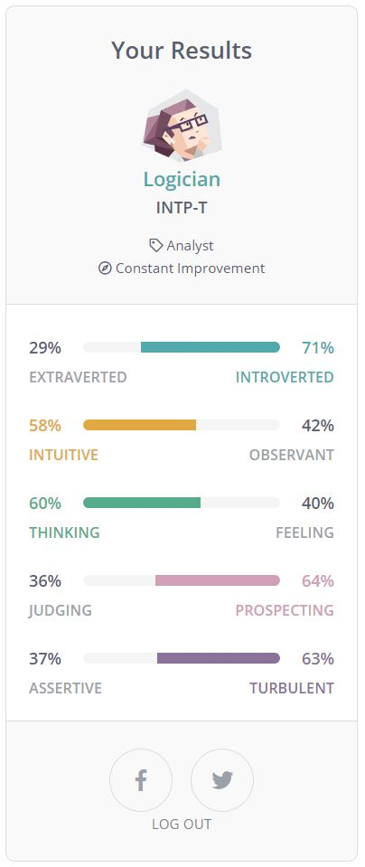

Personality Profile

Foreword that the Myer-Briggs Personality tests should not be used as an indicater of a person's personality but merely as a tool to
see which traits a person may have.
Shown here are the
Myers-Briggs test,
Learning style test and
another Word association test.
These results cannot give a complete image of me as a person but they do mostly agree with each other.
I wanted to originally include my TCAT test for teaching capability but unfortunately I couldn't locate my results for it.
I will say that the results indicated high academic level but lacking in social interaction skills and differing
emotional intelect capabilities.
I believe these results indicate that I am more introverted than extroverted and that I am both thinking/feeling or judging/perceiving. When doing the word association, my default was to answer the next word associated with the word shown, maybe indicating logical behaviour. For me these tests are fun and provide some insight into me as a person but should be taken with a grain of salt. For example, I am less introverted than I used to be and social skills can be improved on so they are not set in stone.
These results might affect a team - for example if a whole team were composed of intoverted people, then managing to get anything done may become a challange as people may not be willing to communicate without prompting. I would like to think I am able to work well with any team with the exception of people who slack off. One specific situation where I struggle is where no-one wants to be the unofficial leader yet when I step in to try to organise things, everyone else starts pushing their ideas meaning there is no compromise and we get nowhere.
Taking this into account, it would be best to be proactive and assign roles early on in a team so everyone know what they are doing. Also important is making sure everyone knows what's expected of them - I am fine with someone being a a slower worker but others may see this as tardiness. Clear communication between members without injuring other's feelings is important to avoid these kind of misunderstandings - this is not necessarily easy.